The previous chapter (see Chapter 1) detailed the steps necessary to extract data from a set of microfluidic images through image analysis techniques and fluorescence microscopy. Each step was instrumental in creating a dataset that was easy to explore and ask questions. With the help of computational biology, systems biology, and data analysis techniques, we could process these files to help us in the search to find the role of filamentation in cell survival.
Computational biology and systems biology contributed to the development of this analysis. In principle, computational biology originated after the origin of computer science with the British mathematician and logistician Alan Turing (regularly known as the father of computing) (TURING 1950). Over time, systems biology emerged as an area that synergistically combines models and experimental data to understand biological processes (Bruggeman et al. 2007). Thus, giving a step towards creating models that, in general, are phenomenological but sometimes serve to discover new ideas about the process under study. Without the computer’s power, modern ideas and aspects of studying biological sciences would otherwise be unthinkable.
Here, we divide the experimental analysis into two main parts: 1) at the cell level or measurements at specific points in time and 2) at the population level and time series. The first level allowed us to identify the individual contribution of each variable understudy to determine cell survival. The second level allowed us to understand how the population behaves according to the passage of time in the face of exposure to a harmful agent (in this case, beta-lactam antibiotics). Together, both visions of the same study phenomenon allowed us to extract the main ideas for postulating a mathematical model that seeks to show how filamentation is a factor for cell survival in stressful environments (see Chapter 3).
2.2 General preprocessing of data
The raw data processing consisted mainly of creating two levels of observation for the cells of both chromosomal strains and multicopy plasmids. The first level is at a cell granularity, point properties. The second level consists of the cells over time, thus observing properties at the population level. We did this because it would allow us to understand what factors affect filamentation and why.
We normalized the fluorescence values of DsRed and GFP for both experiments based on the values observed before antibiotic exposure. It allowed us to have a basis to work with and compare expressions between cells. In the case of DsRed environment drug concentration, we also applied a logarithmic transformation to observe subtle changes in fluorescence intensity that would allow us to detect cell death.
Ultimately, we decided to classify cells into four fundamental groups based on whether the cell filamented and survived (see Figure 2.1). We define a filamented cell as a cell with more than two standard deviations from the mean concerning the lengths observed before introducing antibiotics into the system. On the other hand, although there are multiple ways to define death from single-cell observations (Trevors 2012; Kroemer et al. 2008), we considered a cell dead or missing when we stopped having information about it, either because of fluorescence in the red channel was above a given threshold (resulting from an increase in cell membrane permeability and the introduction of fluorescent dye into the cell) or because it left the field of observation. Therefore, we defined a surviving cell as a cell observed before and after antibiotic exposure that did not surpass the DsRed death threshold.
Figure 2.1: Cell classification and its distribution across experiments. We define a filamented cell as a cell whose length exceeded two standard deviations from the mean at any time during the experiment. A surviving cell is a cell we observed before and after exposure to the antibiotic and did not surpass the DsRed death threshold. Accordingly, we removed from the analysis those cells that died before or were born after antibiotic exposure. Therefore, we delimited the effect caused by antibiotic exposure.
2.3 Results
2.3.1 Cell length and the amount of GFP are crucial in determining cell survival
We evaluated the DsRed, GFP, and length values for each cell at different time points: initial, filamentation, and end. This preprocessing allowed us to observe and quantify each cell at critical times in the experiment and eliminate noise or signals outside the scope of this investigation.
We define the initial time as the first time we observed the cell in the experiment. Filamentation time equals when a cell reaches the filamentation threshold (see Figure 2.4) for the first time. We defined the end time as the time of the last observation of the cell. We decided to bound the end time for surviving cells to one frame (10 min) after the end of antibiotic exposure so that the observed signal would reflect the final stress responses.
When we compared the distributions of DsRed, GFP, and length for both experiments, we observed the changes in their role in cell survival. In Figure 2.2, we show that indistinctly and, as expected, surviving cells managed to eliminate the antibiotic by the end time. In contrast, dead cells presented higher levels of antibiotics (measured by proxy through the mean DsRed intensity of the cell).
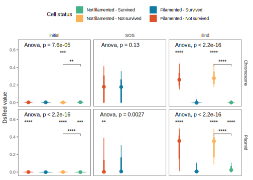
Figure 2.2: DsRed temporal distribution. To evaluate the incident effect of the antibiotic marked by DsRed on cells by class, we show its values at three key moments: start, filamentation (SOS), and end. The upper asterisks represent the significance value when comparing a group X to the filamented and surviving cell reference. Asterisks in a line indicate whether or not there is a significant difference in the survival of non-filamented cells. Dots represent the mean of each group. The line bars represents the distribution of the data. Although, at the initial time, we observe multiple significant differences, this is likely due to the intrinsic noise of the system since, as expected, the values are close to zero. We observed a difference between the surviving and non-filamented cells for the chromosomal strain for the SOS time, but the same did not occur for the plasmid strain. The final amount of DsRed makes a clear difference between survival and death.
On the other hand, GFP observations in Figure 2.3 showed us that filamented cells had low fluorescent intensities (low plasmid copy-number) at the beginning of the experiment. In comparison, the chromosomal strain did not exhibit noticeable changes in GFP levels. For the final observation times, GFP measurements indicated that among the cells that did not filament, the ones that survived exhibited a reduced GFP expression concerning cells killed by the antibiotic. Meanwhile, for the filamented cells, whether surviving or dead, their GFP measurements indicated no difference at the beginning or the end of the experiment, suggesting the presence of other determinants of cell survival.
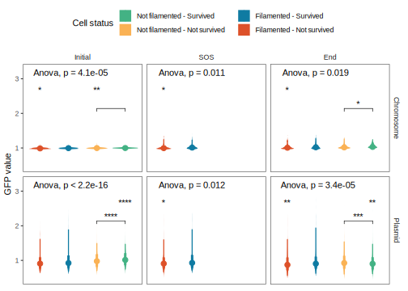
Figure 2.3: GFP temporal distribution. To evaluate the incident effect of the GFP on cells by class, we used the same notation as in Figure 2.2. The chromosomal strain exhibits variability in GFP at different time points, mainly due to experimental noise resulting from low fluorescent intensity values. As expected, filamented cells had a lower initial GFP in the plasmid strain. At the time of filamentation, there appear to be differences in fluorescence between surviving and dead cells. However, in the end time, we observed that the surviving non-filamented cells have lower GFP values than the non-filamented dead cells and alive filamented cells.
Cell length was one of the factors that GFP expression levels could not explain for cell survival. In Figure 2.4, we show that the conclusions regarding filamentation were applicable for both chromosomal and plasmid strains. For the initial times, filamented and survived cells were shorter in length than those that died but longer than not filamented cells of both classes, while non-filamented cells did not differ. We observed no length differences between cells at filamentation time. Thus, survival could depend on other factors, such as growth rate. In the final time, the results were well-defined. Surviving cells had a greater length than their non-surviving pair (i.e., dead filamented and non-filamented cells). However, for filamented cells, surviving cells generally represent a distribution of higher final length values but are not as extensive as their dead counterpart. Which we could explain as a length limit to which cells can grow without dying. Nevertheless, we had no information to evaluate such a hypothesis.
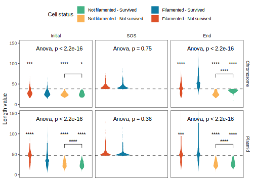
Figure 2.4: Length temporal distribution. To evaluate the incident effect of length on cells by class, we use the same notation as in Figure 2.2. The observations for both strains, chromosomal or plasmid, are the same. In the beginning, the surviving filamented cells already have a difference in length from the rest of the classes. At the time of filamentation, there is no difference to help determine whether the cell will survive or not. Finally, in the final time, it seems that the surviving filamented cells have a greater length than the rest of the groups. However, this length is moderate compared to the excess length shown by non-surviving filamented cells. On the other hand, we highlighted the growth of the surviving non-filamented cells. Therefore, although they did not reach a length for us to classify as filamented, the cells did resort to filamentation.
Once we observed the effects of GFP expression levels and lengths in determining whether a cell lives or dies, we projected the cells onto the plane. We painted them with their class status (See Figure 2.1) to determine whether these two variables contained the necessary information to cluster the data correctly. In Figure 2.5, we show the initial GFP and length values projection. While, with some work, we could contextually place the results in Figure 2.3 and Figure 2.4, the initial values did not appear to determine the classes. Therefore, we explored the final versus initial values differences in Figure 2.6. With this new representation of the cells in the plane, we contextualized the statistical results presented in Figure 2.3 and Figure 2.4. Besides, it showed us that differences in length (i.e., filamentation) and reductions in GFP expression are essential in determining cell survival. Though the clustering of cell status is not entirely separated, other variables affect the experimental results in cell survival.
Figure 2.5: Experiment’s initial values. By positioning a cell in space based on its initial length and GFP values, we can see that class separation occurs, but not as a strong signal. Therefore, we concluded that although the initial state influences the result, this is not everything. For this, we have the example of the length changes throughout the experiment caused by filamentation. In this graph, the GFP scale is at log10 to help us observe those minor differences between the experiments.
Figure 2.6: Experiment’s initial values differences. By comparing the metric differences of the last observation and the first observation of a cell, we can separate mainly the surviving filamented cells from those that did not do it in both experiments (blue dots). Meanwhile, cells with plasmids form a small accumulation of surviving cells that did not produce filament (green dots). However, this has made a breakthrough in understanding what is affecting cell survival. There are still variables that we can include to understand this phenomenon better.
2.3.2 Number of divisions and cell age do not appear to play a clear role in determining cell survival
In Section 2.3.1, we explored the effect on cell survival through GFP variability and cell length.However, Figure 2.5 and Figure 2.6 showed us the possibility of other factors relevant to the phenomenon under study. As some papers in the literature suggest, some of these other factors may be cell division and chronological age (i.e., how much time has passed since the last cell division at the time of exposure to a toxic agent) (Moger-Reischer and Lennon 2019; Roostalu et al. 2008; Heinrich, Leslie, and Jonas 2015). Therefore, we chose to observe these two metrics in experiments at a purely qualitative level, i.e., without the inclusion of, e.g., metrics of membrane or cell cycle properties (Joseleau-Petit, Vinella, and D’Ari 1999).
Although we expected to see a small contribution, either by the number of divisions or cell age, in Figure 2.7 and Figure 2.8, we could not observe a precise effect of these variables on cell survival. Although they could have an explanation or biological significance, we decided to omit as relevant in the characterization of our cells, since the signal was not clear. However, we derived from this analysis a slightly simpler variable that tells us whether a cell underwent a cell division event or not. So it gives us a more generalized picture of the contribution of division to cell survival (see Figure 2.14).
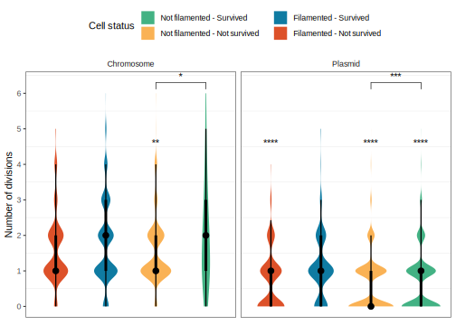
Figure 2.7: Cell’s number of divisions. Both chromosomal and plasmid cells exhibited a wider distribution of divisions for the surviving cells against non-surviving cells. However, we did not appreciate a significant change between the chromosome filamented cells. Therefore, the number of cell divisions’ contribution to filamentation remains uncertain.
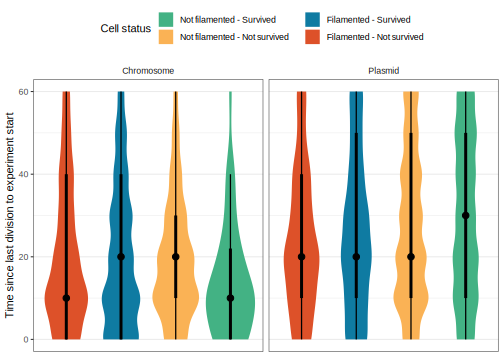
Figure 2.8: Time elapsed since the last division at the beginning of the experiment. The mean time of the last division before starting the experiment indicates that it did not influence the final result for chromosomal cells. There is a slight difference between the filamented-not survived cells and the rest for cells with plasmids. However, the signal does not appear to be strong on the survival role. Therefore, we conclude that we have no evidence to support that the time of the last division at the beginning of the experiment influences the final classification results.
2.3.3 Time to reach filamentation matters in determining cell survival
In Figure 2.2, Figure 2.3, and Figure 2.4, we showed how, at the time of filamentation, DsRed and GFP levels appeared indifferent to the cells. Therefore, we hypothesized that a possible variable determining cell survival could be its time to activate its anti-stress response system that causes filamentation. Furthermore, we also guided our hypothesis by previous reports showing us how the gene expression level can induce filamentation with tight temporal coordination [x].
While, for our analyses, we did not measure the concentration of antibiotic that triggers filamentation per se, we indirectly quantified its effect by using the time it took for a cell to reach a length at which it is already considered a filamentating cell. Furthermore, to recognize that the observed effect was a product of the experiment, we decided to keep only filamented cells just once antibiotic exposure began.
Figure 2.9 shows how filamentation times are narrower for chromosomal cells than for plasmid-bearing cells. Then, we hypothesize that the effect could come from the heterogeneity in the plasmid copy number in the population. Also, interestingly, we observed that, for both experiments, cells that survived had longer filamentation times than those that died. These differences in response times suggest the following: 1) if the cell grows too fast, it will reach a limit and start to accumulate antibiotics constantly, and 2) if the cell grows too fast, likely, the cost of maintaining an ample length for prolonged periods of exposure will become counterproductive.
Figure 2.9: Time to filamentation filtered. We only keep cells that filamented during the antibiotic exposure to quantify their time to filamentation and its effect on survival. In this way, we normalize the start times for the calculation of the filamentation time. For both strains, the filamentation time had a more significant delay in the surviving cells.
In Figure Figure 2.10, we decided to project the results of Figure Figure 2.9 in a space similar to the one described in Figure Figure 2.5). Thus, we separated our data into cells that survived and cells that did not and painted them when it took them to reach their filamented state. We realized that, by adding this temporal component to the initial variables of length and GFP, we could separate surviving cells from dead cells to a greater degree. However, it may still not be enough, and there are still many other variables that play a crucial role in understanding the ecology of stress and how some cells will be survivors or not.
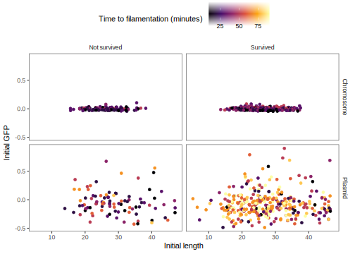
Figure 2.10: Experiment initial values with time to filamentation. As in Figure 2.5, including the time it will take for cells to filament allows us to better understand the phenomenon of survival. Cells that filamented and survived generally have a much higher delay than their non-filamented peers for both strains (see Figure 2.9).
2.3.4 Increasing the system’s complexity and analyzing it in an unsupervised way allows a correct classification of cell states
In the experiments, we observed the importance of GFP filamentation and variability for cell survival. Similarly, we realized that other variables must be affecting the final results. Filamentation and GFP variability alone did not fully recapitulate the expected behavior of the data. That is, the target variables did not capture the system’s heterogeneity.
The inability to reproduce cell classification led us to question two things: 1) the possibility that our sorting was wrong beforehand, and 2) we did not have enough variables to capture the study phenomenon. We decided to take the unsupervised learning way to answer these subjects because it allows us to project our data without prior knowledge.
We opted for the path of dimensionality reduction techniques where each variable or feature is equivalent to one dimension. The essence of dimensionality reduction is that it is not feasible to analyze each dimension with many dimensions. Furthermore, dimensionality reduction helps us counteract several problems, such as reducing the complexity of a model, reducing the possibility of overfitting a model, removing all correlated variables, and visualizing our data in a two- or three-dimensional space for better appreciation. Improved visualization and identification of essential variables are the main reasons to guide and complement our research with this technique.
2.3.4.1 Principal Component Analysis (PCA) emphasizes the importance of cell length and its GFP in cell survival
The first dimensionality reduction technique we decided to use was Principal Component Analysis (PCA) (Pearson 1901; Hotelling 1936). Scientist mainly uses PCA to create predictive models or in Exploratory Data Analysis (EDA). In our case, we only use it as an EDA.
For chromosomal and plasmid strain, in Figure 2.11 and Figure 2.12, we show the projection of the first two principal components (PCs), respectively. Figure 2.11 separates the manually annotated classes, surviving cells separated from non-surviving cells. However, for Figure 2.12, the class separation was a bit rougher but allowed us to separate the surviving filament cells from the dead ones.
Figure 2.11: Principal Component Analysis of chromosomal strain. When integrating the information of different variables in a dimensionality reduction analysis, we observed a clear separation between the surviving cells and those that did not. The contributions that determined this phenomenon come mainly from the last amount of DsRed, GFP, and cell length (see Figure 2.13). Although it seems obvious, it effectively confirms that the temporal classification that we carry out makes sense. Longer length represents a greater uptake of antibiotics, but in a much larger volume, so the net effect is an internal reduction of antibiotics (see Figure 3.1).
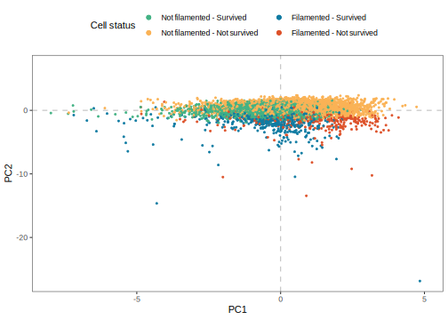
Figure 2.12: Principal Component Analysis of plasmid strain. By integrating the information from different variables in a dimensionality reduction analysis, we observed a clear separation between the filamented and non-filamented cells. Said class separation is given by component 2 (Y-axis), which is determined primarily by the initial and final lengths of the cells (see Figure 2.14). Furthermore, the classification also allows us to separate those filamented cells that died from those that survived. Therefore, despite the increase in the system’s complexity, length plays a role in determining survival.
For their part, in Figure 2.13 and Figure 2.14, we show the total contribution of each variable per PC for the chromosomal and plasmid strain, respectively. Finding that filamentation plays a crucial role in determining cell survival. For example, for PC2, we appreciated how the variable end DsRed directed the dots to the positive side, while the variable end and start length directed the dots to the opposing side. Therefore, we can support that filamentation has a role in moving cells away from having higher amounts of DsRed.
Figure 2.13: Variables contribution of Principal Component Analysis of chromosomal strain. In Figure 2.11, we see that the classes we created manually reflected what we observed when performing a reduction of dimensions analysis. Here we show the individual contribution of each variable for the first two components. The variables that most affected components 1 and 2 (X-axis and Y-axis, respectively) are the final measurements of DsRed, GFP, length, and the initial amount of GFP. Given that they are chromosomal strains, we should note that this variability could be produced by intrinsic experimental noise that we could not remove. With that in mind, having the DsRed and the final length highlights the inherent role of cells by having increased their size.
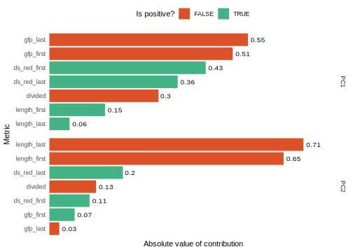
Figure 2.14: Variables contribution of Principal Component Analysis of plasmid strain. In Figure 2.12, we saw that we could separate the filamented cells from the non-filamented ones. The reduction analysis also shows a slight difference between surviving and dead cells within the small group of filamented cells. Here we offer the individual contribution of each variable for the first two components. For the first component (x-axis in Figure 2.11), the initial and final GFP measurements mainly received the component’s variability. We expected this component’s importance since it is a chromosomal strain, so we hope its inherent variation will be inherited. On the other hand, the second component (Y-axis in Figure 2.11) was determined by the length of the cell. Factors that, in the chromosomal strain (see Figure 2.13), determined with the help of DsRed the separation between surviving and dead cells.
2.3.4.2 Uniform Manifold Approximation and Projection (UMAP) correctly represents the local structure of cell states
Staying with only a one-dimensionality reduction technique was not an option, so we used the UMAP technique (McInnes, Healy, and Melville 2018). We mainly decided to use UMAP for clustering purposes and see if the annotated clusters corresponded to the manually annotated ones. UMAP has certain advantages for these purposes, e.g., it preserves the global structure across the whole space, so the distances between clusters matter.
In Figure 2.15 and Figure 2.16, we show how, using the same variables used in the “PCA” section, UMAP accomplished clustering the four proposed classes correctly. Interestingly, in Figure 2.15, UMAP formed three general groups and four for Figure 2.16. However, in general, UMAP clustered the surviving cells from those that did not survive. On investigating why this separation occurred, we found that the large groups coalesced into one another if we eliminated the division variable. So, in a way, the division also has a role in determining survival, but it is not essential or at least not over-represented in our data.
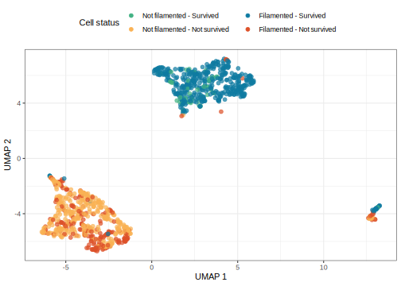
Figure 2.15: UMAP coordinates of chromosome strain. We represented the cells in a low-dimensional space. This new projection allowed it to group the cells that survived and those that did not. Therefore, as in PCA Figure 2.11, this technique supports the manual classification that we carry out.
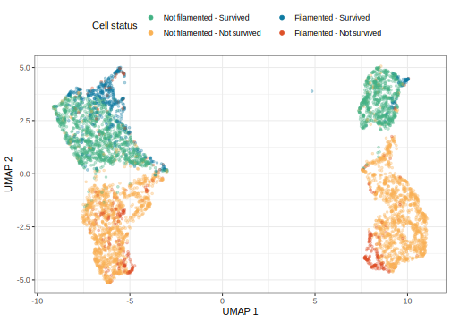
Figure 2.16: UMAP coordinates of plasmid strain. As in Figure 2.15, the representation in a low-dimensional space helped classify the cells into four groups, two survivors and two non-survivors. The variable division marks the separation of classes. The division variable indicates whether a cell divided during its lifetime or not. Together, the UMAP represents the manually assigned classes.
2.3.5 Population dynamics reveal how filamentation contributes cell survival
From the full tracking dataset, we evaluated how the different cell states behaved over time—for example, understanding how the cells absorbed antibiotics or how they elongated in time. In contrast to the dataset generated in the Section 2.3.1, we did not truncate the results 10 minutes after the antibiotic exposure. In this way, we could observe cell behavior before and after the presence of the toxic agent.
In Figure 2.17, we observed a small fraction of filamentous cells without exposure to the toxic agent in both cell strains. However, after antibiotic exposure at minute 60, we observed increases in the proportion of filamented cells. It is interesting to note how filamented cells grew after antibiotic exposure for the chromosomal strain. We speculate that this post-antibiotic growth exists because, once the SOS system that triggers filamentation is activated, the system continues to grow until it reaches a limit regardless of whether the damaging agent is still present (Justice et al. 2008; Mückl et al. 2018). Moreover, we observed how the cells start to divide again after some time because the proportion of non-filament cells starts to grow while the filament cells start to divide. We observed the same effects for the plasmid strain. However, the number of filament cells expected was much lower by experimental design.
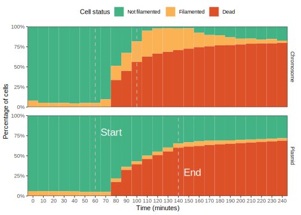
Figure 2.17: Population status over time. We calculate how many cells of each type existed for each time point: non-filamented and filamented living cells (green and orange areas, respectively) and dead cells (red area; we considered dead cells as those that existed at one time and then stopped tracking). The gray vertical lines represent each experiment’s start and end of antibiotic exposure. The experiment was finalized with the resolution of the cells when they returned to their non-filamented state. The effect of filamentation and its spread after exposure to the antibiotic is evident for the chromosomal strain. For its part, for the plasmid strain, it is observed how the filamented cells begin to appear slowly. Their proportion is as expected, given that the population had a wide distribution of GFP that allowed them to combat exposure to the antibiotic.
In Figure 2.18, we showed that once antibiotics exposure began, those cells that died had a much faster increase in DsRed than those that did manage to live, regardless of whether they were filamented. On the other hand, surviving cells maintained their relatively stable DsRed levels. We noted that length was critical for the surviving cells for the chromosomal strain by turning to the GFP and length variables for a temporal explanation. Even cells categorized as non-filamented reached the filamentation threshold minutes after antibiotic exposure. However, the distinction between live or dead filamented cells was not as evident as expected. As for cells with plasmids, the effect on GFP for surviving cells was maintained for filamented cells and decreased for non-filamented cells. For the filament cells that died, we showed that they had, on average, a much longer initial length than the surviving cells. We also consider it necessary to understand which variables affect cell survival.
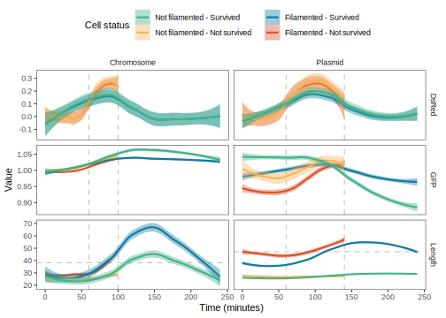
Figure 2.18: Population measurements over time. The colored lines symbolize the average value of each metric at each instant of time, while its surrounding shaded area represents the 95% confidence interval. The vertical lines represent the start and end of antibiotic exposure. The horizontal line in the length metric symbolizes the threshold to consider a cell filament. Regarding the GFP metric, the behavior is relatively stable for the chromosomal strain. We observed a faster increase of DsRed for the non-surviving populations in both experiments. In contrast, for the plasmid strain, a decline in GFP is observed for the population that did not survive. For the length metric, it is interesting to note how the chromosome cells that did not filament continued to grow past the filamentation threshold once the exposure to the antibiotic in the chromosomal strain had ended. On the other hand, the filamented and dead cells seem to have a greater length from the beginning for the plasmid strain.
2.3.6 Heterogeneity in plasmid copy-number allows various forms of survival in addition to filamentation
We are confident that filamentation has a fundamental role in determining cell survival, as we have shown so far. However, for plasmid cells, we have a component of our complete interest; heterogeneity. Each cell can possess a different plasmid copy number; thus, each could show a different behavior under stress (San Millan et al. 2016). For instance, heterogeneity can produce resistant cells that do not suffer damage, susceptible cells, and cells that form filaments to mitigate environmental stress.
To study the effect of variability in plasmid copy number on the survival probability of the population, we decided to group cells by the proportion of initial GFP with respect to the population maximum. We defined 100% of the population as the number of total cells at the onset of antibiotic exposure. Figure 2.19 shows how the cells with the highest amount of GFP remained unchanged once antibiotic exposure began, while the rest of the cells started to decrease their percentage of surviving cells. However, the decrease was not linear. On the contrary, we observed a bi-modal distribution in the reduction of live cells. An average GFP point provided higher survival than a point below or above the average (except for cells very close to the population maximum).
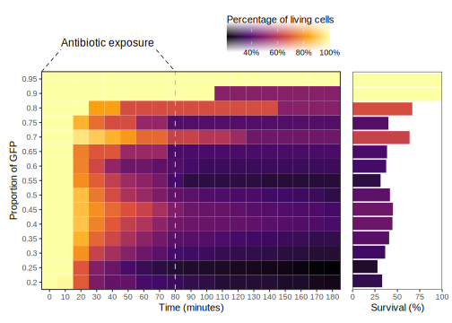
Figure 2.19: Population survivals binned by initial GFP over time. We categorized the cells’ GFP into ranges of proportions 0.05 concerning the maximum amount of GFP in the population. 100% cells per bin of GFP was taken as the number of cells one frame before the start of exposure to the antibiotic (minute 50). Therefore, dark to light colors represent a generation of new cells, and light to dark colors the death of cells. The black vertical bars represent the start and end of the antibiotic exposure. Bars size and color on the right represent the percentage of the living cells 10 minutes after the end of the experiment. As shown in Figure 2.20, we showed that the surviving cells appear to follow something similar to a bimodal distribution. More cells survive with a moderate amount of GFP or with an amount close to the maximum of the population.
Therefore, what we observed was a bimodal distribution for GFP-dependent cell survival. In order to show this effect more clearly, in Figure 2.20, we plotted the survival probability for each GFP bin without normalizing for the population maximum. This new plot allowed us to observe how the bimodal survival distribution occurs for cells that did not grow as filaments, whereas cells that filament increase their survival probability gradually as they have more initial GFP (see also Figure 2.3).-distribution).
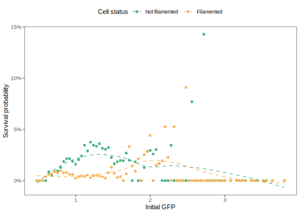
Figure 2.20: Plasmid initial GFP survival probability. We calculated the survival probability after comparing the population distributions of GFP with those of the cells that managed to survive. To assess survival by GFP, we only used plasmid cells. For non-filamented cells (blue dots), a bell forms with an upturned tail. On the other hand, for the filamented cells (red dots), a continuous increase in survival is shown just when it seems that the probability of the non-filamented cells has decreased. In global, much GFP has higher resistance, but an average GFP value without filamentation also increases the probability of survival.
As in Figure 2.20, in Figure 2.21, we show the survival probability given an initial length. We observe that survival is higher for cells that did not grow as filaments if the initial length was less than the average. In contrast, for filamented cells, the survival probability increased as cell length was longer at the beginning of the experiment (see also Figure 2.4). However, it is noteworthy that the probability of survival had a limit in which a higher initial length meant a lower probability of survival (see red dotted lines in Figure 2.21).
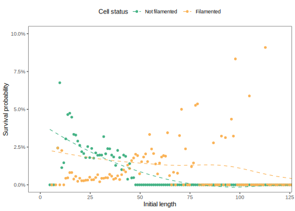
Figure 2.21: Plasmid initial length survival probability. We calculated the survival probability after comparing the population distributions of length with those of the cells that managed to survive. For non-filamented cells (blue dots), the survival probability is higher for those cells with small initial lengths, while It seems to decrease with a more extensive initial size. For their part, for filamented cells (red dots), the probability of survival increases according to their length but then declines when the cells are too long at first (see red dotted line). Therefore, in general, a small and moderate length or an initial length already filamented from the beginning increases the chances of survival.
2.4 Discussion
Here, we evaluated different variables that could determine cell survival upon exposure to toxic agents by studying two experimental populations of E. coli, one strain with a resistance gene on the chromosome and the other on multicopy plasmids. We identified two variables that are predominantly responsible for cell survival: cell length and GFP amount related to the cell’s inherent resistance to the toxic agent and heterogeneity in response times.
On the other hand, as other studies have already mentioned (Heinrich, Leslie, and Jonas 2015; Wang and Levin 2009), we examined cell activity and youth in a minimalistic way. While the distribution of the number of divisions exemplifies a broader and more uniform range for the surviving cells, the cells that died tended to have fewer divisions. However, for the study of cellular youth at the time of exposure to the toxic agent, the results did not show a clear pattern of behavior for cell fate determination. Therefore, it would be interesting to study cellular youth at a higher level of complexity in future studies to understand its contribution to cell survival.
Interestingly, when we used temporal measurements of cell length, GFP, DsRed, and if a cell divided, we could recapitulate, for the most part, the fates of cellular states (see Section 2.3.1 and Section 2.3.4). Thus, increasing the system’s complexity led to better clustering of cell states, but not how these factors interact biologically in determining cell survival. Therefore, we decided to postulate a mathematical model that helps us understand the critical components of cell survival.
Bruggeman, Frank J., Jorrit J. Hornberg, Fred C. Boogerd, and Hans V. Westerhoff. 2007. “Introduction to Systems Biology.” In, 1–19. Birkhäuser Basel. https://doi.org/10.1007/978-3-7643-7439-6_1.
Heinrich, Kristina, David J. Leslie, and Kristina Jonas. 2015. “Modulation of Bacterial Proliferation as a Survival Strategy.” In, 127–71. Elsevier. https://doi.org/10.1016/bs.aambs.2015.02.004.
Hotelling, Harold. 1936. “Relations Between Two Sets of Variates.”Biometrika 28 (3/4): 321. https://doi.org/10.2307/2333955.
Joseleau-Petit, Daniel̀e, Daniel Vinella, and Richard D’Ari. 1999. “Metabolic Alarms and Cell Division in Escherichia Coli.”Journal of Bacteriology 181 (1): 9–14. https://doi.org/10.1128/jb.181.1.9-14.1999.
Justice, Sheryl S., David A. Hunstad, Lynette Cegelski, and Scott J. Hultgren. 2008. “Morphological Plasticity as a Bacterial Survival Strategy.”Nature Reviews Microbiology 6 (2): 162–68. https://doi.org/10.1038/nrmicro1820.
Kroemer, G, L Galluzzi, P Vandenabeele, J Abrams, E S Alnemri, E H Baehrecke, M V Blagosklonny, et al. 2008. “Classification of Cell Death: Recommendations of the Nomenclature Committee on Cell Death 2009.”Cell Death & Differentiation 16 (1): 3–11. https://doi.org/10.1038/cdd.2008.150.
McInnes, Leland, John Healy, and James Melville. 2018. “Umap: Uniform Manifold Approximation and Projection for Dimension Reduction.”arXiv Preprint arXiv:1802.03426.
Moger-Reischer, Roy Z., and Jay T. Lennon. 2019. “Microbial Ageing and Longevity.”Nature Reviews Microbiology 17 (11): 679–90. https://doi.org/10.1038/s41579-019-0253-y.
Mückl, Andrea, Matthaeus Schwarz-Schilling, Katrin Fischer, and Friedrich C. Simmel. 2018. “Filamentation and Restoration of Normal Growth in Escherichia Coli Using a Combined CRISPRi sgRNA/Antisense RNA Approach.” Edited by Mark Isalan. PLOS ONE 13 (9): e0198058. https://doi.org/10.1371/journal.pone.0198058.
Pearson, Karl. 1901. “LIII. On Lines and Planes of Closest Fit to Systems of Points in Space.”The London, Edinburgh, and Dublin Philosophical Magazine and Journal of Science 2 (11): 559–72. https://doi.org/10.1080/14786440109462720.
Roostalu, Johanna, Arvi Jõers, Hannes Luidalepp, Niilo Kaldalu, and Tanel Tenson. 2008. “Cell Division in Escherichia Colicultures Monitored at Single Cell Resolution.”BMC Microbiology 8 (1). https://doi.org/10.1186/1471-2180-8-68.
San Millan, Alvaro, Jose Antonio Escudero, Danna R. Gifford, Didier Mazel, and R. Craig MacLean. 2016. “Multicopy Plasmids Potentiate the Evolution of Antibiotic Resistance in Bacteria.”Nature Ecology & Evolution 1 (1). https://doi.org/10.1038/s41559-016-0010.
Trevors, J.T. 2012. “Can Dead Bacterial Cells Be Defined and Are Genes Expressed After Cell Death?”Journal of Microbiological Methods 90 (1): 25–28. https://doi.org/10.1016/j.mimet.2012.04.004.
Wang, Jue D., and Petra A. Levin. 2009. “Metabolism, Cell Growth and the Bacterial Cell Cycle.”Nature Reviews Microbiology 7 (11): 822–27. https://doi.org/10.1038/nrmicro2202.
Source Code
# Experiment analysis {#sec-experiment-analysis}```{r}#| label: find-preprocessing-files-02-experiment-analysisexperiment_analysis_files <- fs::dir_ls(path = here::here("data-preprocessing", "02-experiment-analysis"),type ="file",glob ="*qmd")``````{r child=experiment_analysis_files}#| label: execute-preprocessing-files-02-experiment-analysis``````{r clear-environment}rm(list =ls())``````{r}#| label: librarieslibrary(tidyverse)library(tidymodels)library(tidytext)library(plotly)library(ggpubr)library(GGally)library(ggdist)library(embed)library(here)library(fs)library(patchwork)``````{r}#| label: read-processed-datacells_file <-here("data", "processed", "cells_summary.csv")cells_raw_df <-read_csv(file = cells_file,show_col_types =FALSE) %>%select(-over_ds_red_id) %>%rename(divided = divided_id)``````{r}#| label: create-factorscells_df <- cells_raw_df %>%mutate(filamented_id =factor(x = filamented_id,levels =c(FALSE, TRUE), labels =c("Not filamented", "Filamented") ),survived =factor(x = survived,levels =c(FALSE, TRUE),labels =c("Not survived", "Survived") ),cell_status =interaction( filamented_id, survived,sep =" - " ),cell_status =paste0( filamented_id," - ", survived ),cell_status =factor(cell_status) ) %>%relocate(where(is.character), where(is.factor), where(is.logical))``````{r}#| label: population-read-data#| results: hide#| lineages_file <-here("data", "processed", "lineages.csv")lineages_raw_df <-read_csv(file = lineages_file,show_col_types =FALSE) %>%glimpse()``````{r}#| label: population-create-factors#| results: hide#| lineages_processed_1_df <- lineages_raw_df %>%mutate(filamented_id =factor(x = filamented_id,levels =c(FALSE, TRUE),labels =c("Not filamented", "Filamented") ),filamented_at_time =factor(x = filamented_at_time,levels =c(FALSE, TRUE),labels =c("Not filamented", "Filamented") ),survived =factor(x = survived,levels =c(FALSE, TRUE),labels =c("Not survived", "Survived") ),cell_status =interaction( filamented_id, survived,sep =" - " ) %>%as.character() %>%as.factor() ) %>%glimpse()``````{r}#| label: set-default-plot-styletheme_set(theme_bw() +theme(legend.position ="top",strip.background =element_blank(),panel.grid =element_blank() ))cell_status_pallete <-list("Filamented - Not survived"="#dd5129", "Filamented - Survived"="#0f7ba2", "Not filamented - Survived"="#43b284", "Not filamented - Not survived"="#fab255")cell_status_legend_order <-c("Not filamented - Survived","Not filamented - Not survived","Filamented - Survived","Filamented - Not survived")``````{r}#| label: utility-functionsparse_metrics_column <-function(.data, metric_column) { .data %>%mutate( {{ metric_column }} :=str_remove(string = {{ metric_column }},pattern ="(.+)_" ) %>%factor(levels =c("first", "sos", "last"),labels =c("Initial", "SOS", "End") ) %>%identity() )}```## IntroductionThe previous chapter (see @sec-image-processing) detailed the stepsnecessary to extract data from a set of microfluidic images throughimage analysis techniques and fluorescence microscopy. Each step wasinstrumental in creating a dataset that was easy to explore and askquestions. With the help of computational biology, systems biology, anddata analysis techniques, we could process these files to help us in thesearch to find the role of filamentation in cell survival.Computational biology and systems biology contributed to the developmentof this analysis. In principle, computational biology originated afterthe origin of computer science with the British mathematician andlogistician Alan Turing (regularly known as the father of computing)[@turing1950]. Over time, systems biology emerged as an area thatsynergistically combines models and experimental data to understandbiological processes [@bruggeman]. Thus, giving a step towards creatingmodels that, in general, are phenomenological but sometimes serve todiscover new ideas about the process under study. Without the computer'spower, modern ideas and aspects of studying biological sciences wouldotherwise be unthinkable.Here, we divide the experimental analysis into two main parts: 1) at thecell level or measurements at specific points in time and 2) at thepopulation level and time series. The first level allowed us to identifythe individual contribution of each variable understudy to determinecell survival. The second level allowed us to understand how thepopulation behaves according to the passage of time in the face ofexposure to a harmful agent (in this case, beta-lactam antibiotics).Together, both visions of the same study phenomenon allowed us toextract the main ideas for postulating a mathematical model that seeksto show how filamentation is a factor for cell survival in stressfulenvironments (see @sec-model-analysis).## General preprocessing of data {#sec-experiment-general-preprocessing}The raw data processing consisted mainly of creating two levels ofobservation for the cells of both chromosomal strains and multicopyplasmids. The first level is at a cell granularity, point properties.The second level consists of the cells over time, thus observingproperties at the population level. We did this because it would allowus to understand what factors affect filamentation and why.We normalized the fluorescence values of DsRed and GFP for bothexperiments based on the values observed before antibiotic exposure. Itallowed us to have a basis to work with and compare expressions betweencells. In the case of DsRed environment drug concentration, we alsoapplied a logarithmic transformation to observe subtle changes influorescence intensity that would allow us to detect cell death.Ultimately, we decided to classify cells into four fundamental groupsbased on whether the cell filamented and survived (see@fig-cell-distribution-across-experiments). We define a *filamentedcell* as a cell with more than two standard deviations from the meanconcerning the lengths observed before introducing antibiotics into thesystem. On the other hand, although there are multiple ways to definedeath from single-cell observations [@trevors2012; @kroemer2008], weconsidered a *cell dead or missing* when we stopped having informationabout it, either because of fluorescence in the red channel was above agiven threshold (resulting from an increase in cell membranepermeability and the introduction of fluorescent dye into the cell) orbecause it left the field of observation. Therefore, we defined a*surviving cell* as a cell observed before and after antibiotic exposurethat did not surpass the DsRed death threshold.```{r}#| label: fig-cell-distribution-across-experiments#| fig-scap: Cell classification and its distribution across experiments.#| fig-cap: >#| **Cell classification and its distribution across experiments.**#| We define a *filamented cell* as a cell whose length exceeded two standard#| deviations from the mean at any time during the experiment. A *surviving cell*#| is a cell we observed before and after exposure to the antibiotic and did not#| surpass the DsRed death threshold. Accordingly, we removed from the analysis#| those cells that died before or were born after antibiotic exposure. #| Therefore, we delimited the effect caused by antibiotic exposure.#| p_cells_distribution <- cells_df %>%count(experiment_id, cell_status) %>%group_by(experiment_id) %>%mutate(percentage = n /sum(n) *100,ymax =cumsum(percentage),ymin =c(0, head(ymax, -1)),labels =paste0(format(percentage, digits =2), "%"),labels_position = (ymax + ymin) /2,total_label =paste0("Total:\n", format(sum(n), big.mark =","), " cells") ) %>%ungroup() %>%identity() %>%ggplot(aes(ymin = ymin,ymax = ymax,xmin =3,xmax =4 ) ) +geom_rect(size =1.5,color ="white",aes(fill = cell_status) ) +geom_label(x =2,aes(y = labels_position,label = labels ),label.size =NA,size =3.5, ) +geom_text(aes(x =-Inf, y =-Inf, label = total_label),hjust =0.5, vjust =0.5 ) +facet_grid(. ~ experiment_id) +coord_polar(theta ="y") +xlim(c(-1, 4)) +guides(fill =guide_legend(ncol =2) ) +theme_void() +theme(legend.position ="bottom" ) +labs(fill ="Cell status" ) +scale_fill_manual(values = cell_status_pallete,breaks = cell_status_legend_order ) +NULLp_cells_distribution```## Results### Cell length and the amount of GFP are crucial in determining cell survival {#sec-length-gfp-crucial}We evaluated the DsRed, GFP, and length values for each cell atdifferent time points: initial, filamentation, and end. Thispreprocessing allowed us to observe and quantify each cell at criticaltimes in the experiment and eliminate noise or signals outside the scopeof this investigation.We define the *initial time* as the first time we observed the cell inthe experiment. *Filamentation time* equals when a cell reaches thefilamentation threshold (see @fig-length-temporal-distribution) for thefirst time. We defined the *end time* as the time of the lastobservation of the cell. We decided to bound the end time for survivingcells to one frame (10 min) after the end of antibiotic exposure so thatthe observed signal would reflect the final stress responses.When we compared the distributions of DsRed, GFP, and length for bothexperiments, we observed the changes in their role in cell survival. In@fig-dsred-temporal-distribution, we show that indistinctly and, asexpected, surviving cells managed to eliminate the antibiotic by the endtime. In contrast, dead cells presented higher levels of antibiotics(measured by proxy through the mean DsRed intensity of the cell).```{r}#| label: fig-dsred-temporal-distribution#| fig-scap: DsRed temporal distribution.#| fig-cap: >#| **DsRed temporal distribution.**#| To evaluate the incident effect of the antibiotic marked by DsRed#| on cells by class, we show its values at three key moments: start,#| filamentation (SOS), and end. The upper asterisks represent the#| significance value when comparing a group X to the filamented and#| surviving cell reference. Asterisks in a line indicate whether or not#| there is a significant difference in the survival of non-filamented cells.#| Dots represent the mean of each group. The line bars represents the#| distribution of the data. Although, at the initial time, we observe#| multiple significant differences, this is likely due to the intrinsic#| noise of the system since, as expected, the values are close to zero.#| We observed a difference between the surviving and non-filamented#| cells for the chromosomal strain for the SOS time, but the same did not#| occur for the plasmid strain. The final amount of DsRed makes a clear#| difference between survival and death.#| p_temporal_dsred_distributution <- cells_df %>%pivot_longer(cols =contains("ds_red"),names_to ="metric",values_to ="value" ) %>%parse_metrics_column(metric) %>%filter(!is.na(value)) %>%identity() %>%ggplot(aes(x = cell_status, y = value, fill = cell_status, color = cell_status)) +stat_eye() +stat_compare_means(method ="t.test",comparisons =list(c("Not filamented - Survived", "Not filamented - Not survived")),label ="p.signif",label.y =c(0.4),hide.ns =TRUE ) +stat_compare_means(method ="anova",label.x.npc =0.10,label.y.npc =0.93 ) +# Add global annova p-valuestat_compare_means(label ="p.signif",method ="t.test",ref.group ="Filamented - Survived",hide.ns =TRUE,label.y.npc =0.80 ) +facet_grid(experiment_id ~ metric) +guides(color =guide_legend(ncol =2),fill =guide_legend(ncol =2) ) +theme(axis.title.x =element_blank(),axis.text.x =element_blank(),axis.ticks.x =element_blank(),panel.grid =element_blank() ) +labs(fill ="Cell status",color ="Cell status",y ="DsRed value" ) +scale_fill_manual(values = cell_status_pallete,breaks = cell_status_legend_order ) +scale_color_manual(values = cell_status_pallete,breaks = cell_status_legend_order ) +NULLp_temporal_dsred_distributution```On the other hand, GFP observations in @fig-gfp-temporal-distributionshowed us that filamented cells had low fluorescent intensities (lowplasmid copy-number) at the beginning of the experiment. In comparison,the chromosomal strain did not exhibit noticeable changes in GFP levels.For the final observation times, GFP measurements indicated that amongthe cells that did not filament, the ones that survived exhibited areduced GFP expression concerning cells killed by the antibiotic.Meanwhile, for the filamented cells, whether surviving or dead, theirGFP measurements indicated no difference at the beginning or the end ofthe experiment, suggesting the presence of other determinants of cellsurvival.```{r}#| label: fig-gfp-temporal-distribution#| fig-scap: GFP temporal distribution.#| fig-cap: >#| **GFP temporal distribution.**#| To evaluate the incident effect of the GFP on cells by class, we used#| the same notation as in @fig-dsred-temporal-distribution.#| The chromosomal strain exhibits variability in GFP at different#| time points, mainly due to experimental noise resulting from low#| fluorescent intensity values. As expected, filamented cells had#| a lower initial GFP in the plasmid strain.#| At the time of filamentation, there appear to be differences in#| fluorescence between surviving and dead cells. However, in the end time,#| we observed that the surviving non-filamented cells have lower GFP#| values than the non-filamented dead cells and alive filamented cells.#|p_temporal_gfp_distributution <- cells_df %>%pivot_longer(cols =contains("gfp"),names_to ="metric",values_to ="value" ) %>%parse_metrics_column(metric) %>%filter(!is.na(value)) %>%identity() %>%ggplot(aes(x = cell_status, y = value, fill = cell_status, color = cell_status)) +stat_eye() +stat_compare_means(method ="t.test",comparisons =list(c("Not filamented - Survived", "Not filamented - Not survived")),label ="p.signif",label.y =c(2.0),hide.ns =TRUE ) +stat_compare_means(method ="anova",label.x.npc =0.10,label.y.npc =0.93 ) +# Add global annova p-valuestat_compare_means(label ="p.signif",method ="t.test",ref.group ="Filamented - Survived",hide.ns =TRUE,label.y.npc =0.75 ) +facet_grid(experiment_id ~ metric) +guides(color =guide_legend(ncol =2),fill =guide_legend(ncol =2) ) +theme(axis.title.x =element_blank(),axis.text.x =element_blank(),axis.ticks.x =element_blank(),panel.grid =element_blank() ) +labs(fill ="Cell status",color ="Cell status",y ="GFP value" ) +scale_fill_manual(values = cell_status_pallete,breaks = cell_status_legend_order ) +scale_color_manual(values = cell_status_pallete,breaks = cell_status_legend_order ) +NULLp_temporal_gfp_distributution```Cell length was one of the factors that GFP expression levels could notexplain for cell survival. In @fig-length-temporal-distribution, we showthat the conclusions regarding filamentation were applicable for bothchromosomal and plasmid strains. For the initial times, filamented andsurvived cells were shorter in length than those that died but longerthan not filamented cells of both classes, while non-filamented cellsdid not differ. We observed no length differences between cells atfilamentation time. Thus, survival could depend on other factors, suchas growth rate. In the final time, the results were well-defined.Surviving cells had a greater length than their non-surviving pair(*i.e.*, dead filamented and non-filamented cells). However, forfilamented cells, surviving cells generally represent a distribution ofhigher final length values but are not as extensive as their deadcounterpart. Which we could explain as a length limit to which cells cangrow without dying. Nevertheless, we had no information to evaluate sucha hypothesis.```{r}#| label: fig-length-temporal-distribution#| fig-scap: Length temporal distribution.#| fig-cap: >#| **Length temporal distribution.**#| To evaluate the incident effect of length on cells by class,#| we use the same notation as in @fig-dsred-temporal-distribution.#| The observations for both strains, chromosomal or plasmid, are the same.#| In the beginning, the surviving filamented cells already have a difference#| in length from the rest of the classes. At the time of#| filamentation, there is no difference to help determine whether the#| cell will survive or not. Finally, in the final time, it seems that#| the surviving filamented cells have a greater length than the rest#| of the groups. However, this length is moderate compared to the excess#| length shown by non-surviving filamented cells. On the other hand,#| we highlighted the growth of the surviving non-filamented cells.#| Therefore, although they did not reach a length for us to classify as#| filamented, the cells did resort to filamentation.#|p_temporal_length_distributution <- cells_df %>%pivot_longer(cols =contains("length"),names_to ="metric",values_to ="value" ) %>%parse_metrics_column(metric) %>%filter(!is.na(value)) %>%identity() %>%ggplot(aes(x = cell_status, y = value, fill = cell_status, color = cell_status)) +geom_hline(aes(yintercept = filamentation_threshold), linetype ="dashed", alpha =1/2) +stat_eye() +stat_compare_means(method ="t.test",comparisons =list(c("Not filamented - Survived", "Not filamented - Not survived") ),label ="p.signif",label.y =c(60),hide.ns =TRUE ) +stat_compare_means(method ="anova",label.y.npc =0.43,label.x.npc =0.3 ) +# Add global annova p-valuestat_compare_means(label ="p.signif",method ="t.test",ref.group ="Filamented - Survived",hide.ns =TRUE,label.y.npc =0.3 ) +facet_grid(experiment_id ~ metric) +coord_cartesian(ylim =c(0, 150)) +guides(color =guide_legend(ncol =2),fill =guide_legend(ncol =2) ) +theme(axis.title.x =element_blank(),axis.text.x =element_blank(),axis.ticks.x =element_blank(),panel.grid =element_blank() ) +labs(fill ="Cell status",color ="Cell status",y ="Length value" ) +scale_fill_manual(values = cell_status_pallete,breaks = cell_status_legend_order ) +scale_color_manual(values = cell_status_pallete,breaks = cell_status_legend_order ) +NULLp_temporal_length_distributution```Once we observed the effects of GFP expression levels and lengths indetermining whether a cell lives or dies, we projected the cells ontothe plane. We painted them with their class status (See@fig-cell-distribution-across-experiments) to determine whether thesetwo variables contained the necessary information to cluster the datacorrectly. In @fig-just-initial-values, we show the initial GFP andlength values projection. While, with some work, we could contextuallyplace the results in @fig-gfp-temporal-distribution and@fig-length-temporal-distribution, the initial values did not appear todetermine the classes. Therefore, we explored the final versus initialvalues differences in @fig-metric-differences. With this newrepresentation of the cells in the plane, we contextualized thestatistical results presented in @fig-gfp-temporal-distribution and@fig-length-temporal-distribution. Besides, it showed us thatdifferences in length (*i.e.*, filamentation) and reductions in GFPexpression are essential in determining cell survival. Though theclustering of cell status is not entirely separated, other variablesaffect the experimental results in cell survival.```{r}#| label: fig-just-initial-values#| fig-scap: Experiment's initial values.#| fig-cap: >#| **Experiment's initial values.**#| By positioning a cell in space based on its initial length and GFP#| values, we can see that class separation occurs, but not as a strong#| signal. Therefore, we concluded that although the initial state#| influences the result, this is not everything. For this, we have#| the example of the length changes throughout the experiment caused#| by filamentation. In this graph, the GFP scale is at log10 to help#| us observe those minor differences between the experiments.#|p_initial_values <- cells_df %>%ggplot(aes(x =log(gfp_first), y = length_first, color = cell_status)) +geom_point(alpha =1/2, size =0.5) +facet_wrap(. ~ experiment_id, scales ="free") +guides(color =guide_legend(ncol =2, override.aes =list(alpha =1, size =1)),fill =guide_legend(ncol =2) ) +labs(x ="Initial normalized GFP (log10)",y ="Initial length",color ="Cell status" ) +scale_fill_manual(values = cell_status_pallete,breaks = cell_status_legend_order ) +scale_color_manual(values = cell_status_pallete,breaks = cell_status_legend_order ) +NULLp_initial_values``````{r}#| label: fig-metric-differences#| fig-scap: Experiment's initial values differences.#| fig-cap: >#| **Experiment's initial values differences.**#| By comparing the metric differences of the last observation and#| the first observation of a cell, we can separate mainly the#| surviving filamented cells from those that did not do it in both#| experiments (blue dots). Meanwhile, cells with plasmids form a#| small accumulation of surviving cells that did not produce#| filament (green dots). However, this has made a breakthrough in#| understanding what is affecting cell survival. There are still#| variables that we can include to understand this phenomenon better.#| p_metric_differences <- cells_df %>%ggplot(aes(x =log(gfp_last) -log(gfp_first), y = length_last - length_first, color = cell_status)) +geom_point(alpha =1/2, size =0.5) +facet_grid(~experiment_id) +guides(color =guide_legend(ncol =2, override.aes =list(alpha =1)),fill =guide_legend(ncol =2) ) +labs(x ="End GFP - Initial GFP",y ="End length - Initial length",color ="Cell status" ) +scale_fill_manual(values = cell_status_pallete,breaks = cell_status_legend_order ) +scale_color_manual(values = cell_status_pallete,breaks = cell_status_legend_order ) +NULLp_metric_differences``````{r}#| include: false#| label: fig-histogram-gpf-intensity#| fig-scap: Histograms of fluorescent intensity for classified cells.#| fig-cap: >#| **Histograms of fluorescent intensity for classified cells.**#| A) Cells in MG:GT exhibit a fluorescent distribution with low variance#| and with no significant differences in mean GFP between cells that#| produced filaments and were killed (red) or survived (blue), as well#| as for cells that did not produce filaments and died (orange), and those#| that survived drug exposure (green). B) GFP distributions of the#| plasmid-bearing population exhibit large variance. Cells that#| survived showed increased mean fluorescence relative to cells that were#| killed. For surviving cells, mean GFP was significantly lower for cells#| that did not produce filaments with respect to cells that triggered the#| SOS response system.#|cells_df |>ggplot(aes(x = gfp_first,y = ..scaled..,color = cell_status,fill = cell_status )) +geom_density(alpha =1/4, ) +facet_grid(experiment_id ~ .) +scale_x_continuous(expand =c(0, 0) ) +scale_y_continuous(expand =c(0, 0),labels = scales::label_percent() ) +guides(color =guide_legend(ncol =2),fill =guide_legend(ncol =2) ) +theme(legend.position ="top",panel.spacing =unit(1, "lines") ) +labs(x ="GFP",y ="Scaled density",color ="Cell status",fill ="Cell status" ) +scale_fill_manual(values = cell_status_pallete,breaks = cell_status_legend_order ) +scale_color_manual(values = cell_status_pallete,breaks = cell_status_legend_order ) +NULL```### Number of divisions and cell age do not appear to play a clear role in determining cell survivalIn @sec-length-gfp-crucial, we explored the effect on cell survivalthrough GFP variability and cell length.However,@fig-just-initial-values and @fig-metric-differences showed us thepossibility of other factors relevant to the phenomenon under study. Assome papers in the literature suggest, some of these other factors maybe cell division and chronological age (*i.e.*, how much time has passedsince the last cell division at the time of exposure to a toxic agent)[@moger-reischer2019; @roostalu2008; @heinrich2015]. Therefore, we choseto observe these two metrics in experiments at a purely qualitativelevel, i.e., without the inclusion of, e.g., metrics of membrane or cellcycle properties [@Joseleau-Petit1999].Although we expected to see a small contribution, either by the numberof divisions or cell age, in @fig-number-divisions and@fig-time-since-last-division, we could not observe a precise effect ofthese variables on cell survival. Although they could have anexplanation or biological significance, we decided to omit as relevantin the characterization of our cells, since the signal was not clear.However, we derived from this analysis a slightly simpler variable thattells us whether a cell underwent a cell division event or not. So itgives us a more generalized picture of the contribution of division tocell survival (see @fig-plasmid-pca-variable-contribution).```{r}#| label: fig-number-divisions#| fig-scap: Cell's number of divisions.#| fig-cap: >#| **Cell's number of divisions.**#| Both chromosomal and plasmid cells exhibited a wider distribution of#| divisions for the surviving cells against non-surviving cells. However,#| we did not appreciate a significant change between the chromosome #| filamented cells. Therefore, the number of cell divisions' contribution#| to filamentation remains uncertain.#| echo: falselineages_processed_1_df |>filter( time <= antibiotic_start_time ) |>count(experiment_id, id, cell_status, wt = division) |>ggplot(aes(x = cell_status,y = n,fill = cell_status )) +stat_eye() +stat_compare_means(label ="p.signif",method ="t.test",ref.group ="Filamented - Survived",label.y.npc =0.75,hide.ns =TRUE ) +stat_compare_means(method ="t.test",comparisons =list(c("Not filamented - Survived", "Not filamented - Not survived")),label ="p.signif",label.y.npc =0.6,hide.ns =TRUE ) +facet_grid(. ~ experiment_id) +guides(fill =guide_legend(ncol =2) ) +theme(panel.grid.major =element_blank(),axis.text.x =element_blank(),axis.title.x =element_blank(),axis.ticks.x =element_blank(),panel.grid =element_line(colour ="grey92"),panel.grid.minor =element_line(size =rel(0.5)) ) +scale_fill_manual(values = cell_status_pallete,breaks = cell_status_legend_order ) +scale_y_continuous(breaks =0:6 ) +labs(y ="Number of divisions",fill ="Cell status" ) +NULL``````{r}#| label: fig-time-since-last-division#| fig-scap: Time elapsed since the last division at the beginning of the experiment.#| fig-cap: >#| **Time elapsed since the last division at the beginning of the experiment.**#| The mean time of the last division before starting the experiment#| indicates that it did not influence the final result for chromosomal#| cells. There is a slight difference between the filamented-not survived#| cells and the rest for cells with plasmids. However, the signal does not#| appear to be strong on the survival role. Therefore, we conclude that we#| have no evidence to support that the time of the last division at the#| beginning of the experiment influences the final classification results.#| p_time_since_last_division <- cells_df %>%filter(!is.na(time_since_last_division_to_experiment_start)) %>%ggplot(aes(x = cell_status,y = time_since_last_division_to_experiment_start,fill = cell_status ) ) +stat_eye(position ="dodge") +facet_grid(.~experiment_id) +labs(x ="Experiment",y ="Time since last division to experiment start",fill ="Cell status" ) +guides(color =guide_legend(ncol =2),fill =guide_legend(ncol =2) ) +theme(axis.title.x =element_blank(),axis.ticks.x =element_blank(),axis.text.x =element_blank(),panel.grid.major.x =element_blank(),panel.grid =element_line(colour ="grey92"),panel.grid.minor =element_line(size =rel(0.5)) ) +scale_fill_manual(values = cell_status_pallete,breaks = cell_status_legend_order ) +scale_color_manual(values = cell_status_pallete,breaks = cell_status_legend_order ) +NULLp_time_since_last_division```### Time to reach filamentation matters in determining cell survivalIn @fig-dsred-temporal-distribution, @fig-gfp-temporal-distribution, and@fig-length-temporal-distribution, we showed how, at the time offilamentation, DsRed and GFP levels appeared indifferent to the cells.Therefore, we hypothesized that a possible variable determining cellsurvival could be its time to activate its anti-stress response systemthat causes filamentation. Furthermore, we also guided our hypothesis byprevious reports showing us how the gene expression level can inducefilamentation with tight temporal coordination \[x\].While, for our analyses, we did not measure the concentration ofantibiotic that triggers filamentation per se, we indirectly quantifiedits effect by using the time it took for a cell to reach a length atwhich it is already considered a filamentating cell. Furthermore, torecognize that the observed effect was a product of the experiment, wedecided to keep only filamented cells just once antibiotic exposurebegan.@fig-time-to-filamentation-filtered shows how filamentation times arenarrower for chromosomal cells than for plasmid-bearing cells. Then, wehypothesize that the effect could come from the heterogeneity in theplasmid copy number in the population. Also, interestingly, we observedthat, for both experiments, cells that survived had longer filamentationtimes than those that died. These differences in response times suggestthe following: 1) if the cell grows too fast, it will reach a limit andstart to accumulate antibiotics constantly, and 2) if the cell grows toofast, likely, the cost of maintaining an ample length for prolongedperiods of exposure will become counterproductive.```{r}#| label: fig-time-to-filamentation-filtered#| fig-scap: Time to filamentation filtered.#| fig-cap: >#| **Time to filamentation filtered.**#| We only keep cells that filamented during the antibiotic exposure to#| quantify their time to filamentation and its effect on survival. #| In this way, we normalize the start times for the calculation of the#| filamentation time. For both strains, the filamentation time had a more#| significant delay in the surviving cells.p_time_to_filamentation_filtered <- cells_df %>%filter( filamented_id =="Filamented", time_sos > antibiotic_start_time ) %>%mutate(time_to_sos = time_sos - antibiotic_start_time, ) %>%ggplot(aes( x = cell_status, y = time_to_sos, fill = survived)) +stat_eye(position ="dodge") +stat_compare_means(label ="p.signif",label.y.npc =0.8,comparisons =list(c("Filamented - Not survived", "Filamented - Survived")) ) +facet_grid(. ~ experiment_id) +labs(x ="Experiment",y ="Time to filamentation (minutes)",fill ="Cell status" ) +theme( axis.title.x =element_blank(),axis.ticks.x =element_blank(),axis.text.x =element_blank(),panel.grid.major.x =element_blank(),panel.grid =element_line(colour ="grey92"),panel.grid.minor =element_line(size =rel(0.5)) ) +scale_fill_manual(values =c("#dd5129", "#43b284") ) +NULLp_time_to_filamentation_filtered```In Figure @fig-initial-values-with-time, we decided to project theresults of Figure @fig-time-to-filamentation-filtered in a space similarto the one described in Figure @fig-just-initial-values). Thus, weseparated our data into cells that survived and cells that did not andpainted them when it took them to reach their filamented state. Werealized that, by adding this temporal component to the initialvariables of length and GFP, we could separate surviving cells from deadcells to a greater degree. However, it may still not be enough, andthere are still many other variables that play a crucial role inunderstanding the ecology of stress and how some cells will be survivorsor not.```{r}#| label: fig-initial-values-with-time#| fig-scap: Experiment initial values with time to filamentation.#| fig-cap: >#| **Experiment initial values with time to filamentation.**#| As in @fig-just-initial-values, including the time it will take for cells#| to filament allows us to better understand the phenomenon of survival.#| Cells that filamented and survived generally have a much higher delay#| than their non-filamented peers for both strains#| (see @fig-time-to-filamentation-filtered).p_initial_values_with_time <- cells_df %>%filter( filamented_id =="Filamented", time_sos > antibiotic_start_time ) %>%mutate(time_to_sos = time_sos - antibiotic_start_time) %>%ggplot(aes(x = length_first, y =log(gfp_first), z = time_to_sos, color = time_to_sos)) +# stat_summary_2d() +geom_point() +facet_grid(experiment_id ~ survived) +scale_color_viridis_c(option ="inferno") +labs(x ="Initial length",y ="Initial GFP",color ="Time to filamentation (minutes)" ) +NULLp_initial_values_with_time```### Increasing the system's complexity and analyzing it in an unsupervised way allows a correct classification of cell states {#sec-unsupervised-classification}In the experiments, we observed the importance of GFP filamentation andvariability for cell survival. Similarly, we realized that othervariables must be affecting the final results. Filamentation and GFPvariability alone did not fully recapitulate the expected behavior ofthe data. That is, the target variables did not capture the system'sheterogeneity.The inability to reproduce cell classification led us to question twothings: 1) the possibility that our sorting was wrong beforehand, and 2)we did not have enough variables to capture the study phenomenon. Wedecided to take the unsupervised learning way to answer these subjectsbecause it allows us to project our data without prior knowledge.We opted for the path of dimensionality reduction techniques where eachvariable or feature is equivalent to one dimension. The essence ofdimensionality reduction is that it is not feasible to analyze eachdimension with many dimensions. Furthermore, dimensionality reductionhelps us counteract several problems, such as reducing the complexity ofa model, reducing the possibility of overfitting a model, removing allcorrelated variables, and visualizing our data in a two- orthree-dimensional space for better appreciation. Improved visualizationand identification of essential variables are the main reasons to guideand complement our research with this technique.#### Principal Component Analysis (PCA) emphasizes the importance of cell length and its GFP in cell survival```{r experiment-03-split-datasets}#| results: hideexperiment_datasets <- cells_df %>%select(experiment_id, cell_status, divided, contains("first"), contains("last"), -contains("time")) %>%mutate(divided =as.numeric(divided)) %>%select(where(~!any(is.na(.)))) %>%glimpse() %>%group_by(experiment_id) %>% { grouped_data <- .group_split(grouped_data) %>%set_names(nm =group_keys(grouped_data) %>%pull()) } %>%map(select, -experiment_id) %>%identity()chromosome_df <- experiment_datasets$Chromosomeplasmid_df <- experiment_datasets$Plasmid```The first dimensionality reduction technique we decided to use wasPrincipal Component Analysis (PCA) [@pearson1901; @hotelling1936].Scientist mainly uses PCA to create predictive models or in ExploratoryData Analysis (EDA). In our case, we only use it as an EDA.For chromosomal and plasmid strain, in@fig-chromosome-pca-new-coordinates and@fig-plasmid-pca-new-coordinates, we show the projection of the firsttwo principal components (PCs), respectively.@fig-chromosome-pca-new-coordinates separates the manually annotatedclasses, surviving cells separated from non-surviving cells. However,for @fig-plasmid-pca-new-coordinates, the class separation was a bitrougher but allowed us to separate the surviving filament cells from thedead ones.```{r experiment-03-chromosome-pca-prep}#| results: hidec_pca_rec <-recipe(cell_status ~ ., data = chromosome_df) %>%step_naomit(all_predictors()) %>%step_normalize(all_predictors()) %>%step_pca(all_predictors())set.seed(42)c_pca_prep <-prep(c_pca_rec)c_pca_prep``````{r}#| label: fig-chromosome-pca-new-coordinates#| fig-scap: Principal Component Analysis of chromosomal strain.#| fig-cap: >#| **Principal Component Analysis of chromosomal strain.**#| When integrating the information of different variables in a#| dimensionality reduction analysis, we observed a clear separation#| between the surviving cells and those that did not. The contributions#| that determined this phenomenon come mainly from the last amount of#| DsRed, GFP, and cell length (see @fig-chromosome-pca-variable-contribution).#| Although it seems obvious, it effectively confirms that the temporal#| classification that we carry out makes sense. Longer length represents#| a greater uptake of antibiotics, but in a much larger volume, so the net#| effect is an internal reduction of antibiotics#| (see @fig-cell-dimensions-relationship).#|p_c_pca <- c_pca_prep %>%juice() %>%ggplot(aes(x = PC1, y = PC2, color = cell_status)) +geom_vline(xintercept =0, color ="gray", linetype ="dashed") +geom_hline(yintercept =0, color ="gray", linetype ="dashed") +geom_jitter(size =0.7, position =position_jitter(seed =42)) +guides(color =guide_legend(ncol =2, override.aes =list(alpha =1, size =2)),fill =guide_legend(ncol =2, override.aes =list(alpha =1, size =2)) ) +labs(color ="Cell status" ) +scale_fill_manual(values = cell_status_pallete,breaks = cell_status_legend_order ) +scale_color_manual(values = cell_status_pallete,breaks = cell_status_legend_order ) +NULLp_c_pca``````{r experiment-03-plasmid-pca-prep}#| results: hidep_pca_rec <-recipe(cell_status ~ ., data = plasmid_df) %>%step_naomit(all_predictors()) %>%step_normalize(all_predictors()) %>%step_pca(all_predictors())set.seed(42)p_pca_prep <-prep(p_pca_rec)p_pca_prep``````{r}#| label: fig-plasmid-pca-new-coordinates#| fig-scap: Principal Component Analysis of plasmid strain.#| fig-cap: >#| **Principal Component Analysis of plasmid strain.**#| By integrating the information from different variables in a#| dimensionality reduction analysis, we observed a clear separation#| between the filamented and non-filamented cells. Said class separation#| is given by component 2 (Y-axis), which is determined primarily by the#| initial and final lengths of the cells (see#| @fig-plasmid-pca-variable-contribution). Furthermore, the classification#| also allows us to separate those filamented cells that died from those#| that survived. Therefore, despite the increase in the system's#| complexity, length plays a role in determining survival.p_p_pca <- p_pca_prep %>%juice() %>%ggplot(aes(x = PC1, y = PC2, color = cell_status)) +geom_vline(xintercept =0, color ="gray", linetype ="dashed") +geom_hline(yintercept =0, color ="gray", linetype ="dashed") +geom_jitter(size =0.1, alpha =1/3) +scale_x_continuous(limits =c(NA, 5)) +scale_y_continuous(limits =c(NA, 7)) +geom_jitter(size =0.7, position =position_jitter(seed =42)) +guides(color =guide_legend(ncol =2, override.aes =list(alpha =1, size =2)),fill =guide_legend(ncol =2, override.aes =list(alpha =1, size =2)) ) +labs(color ="Cell status" ) +scale_fill_manual(values = cell_status_pallete,breaks = cell_status_legend_order ) +scale_color_manual(values = cell_status_pallete,breaks = cell_status_legend_order ) +NULLp_p_pca```For their part, in @fig-chromosome-pca-variable-contribution and@fig-plasmid-pca-variable-contribution, we show the total contributionof each variable per PC for the chromosomal and plasmid strain,respectively. Finding that filamentation plays a crucial role indetermining cell survival. For example, for PC2, we appreciated how thevariable end DsRed directed the dots to the positive side, while thevariable end and start length directed the dots to the opposing side.Therefore, we can support that filamentation has a role in moving cellsaway from having higher amounts of DsRed.```{r}#| label: fig-chromosome-pca-variable-contribution#| fig-scap: Variables contribution of Principal Component Analysis of chromosomal strain.#| fig-cap: >#| **Variables contribution of Principal Component Analysis of chromosomal strain.**#| In @fig-chromosome-pca-new-coordinates, we see that the classes we#| created manually reflected what we observed when performing a reduction#| of dimensions analysis. Here we show the individual contribution of each#| variable for the first two components. The variables that most affected#| components 1 and 2 (X-axis and Y-axis, respectively) are the final#| measurements of DsRed, GFP, length, and the initial amount of GFP.#| Given that they are chromosomal strains, we should note that this#| variability could be produced by intrinsic experimental noise that we#| could not remove. With that in mind, having the DsRed and the final#| length highlights the inherent role of cells by having increased their size.#|c_tidied_pca <-tidy(c_pca_prep, 3)p_c_titied_pca <- c_tidied_pca %>%filter(component %in%paste0("PC", 1:2)) %>%mutate(component =fct_inorder(component),terms =reorder_within(terms, abs(value), component) ) %>%ggplot(aes(x =abs(value), y= terms,fill = value >0 ) ) +geom_bar(stat ="identity") +geom_text(aes(label =round(abs(value), digits =2)), hjust =-0.2, size =3.5) +facet_grid(component ~ ., scales ="free_y") +scale_y_reordered() +scale_x_continuous(expand =c(0, 0),limits =c(0, 0.8) ) +labs(x ="Absolute value of contribution",y ="Metric",fill ="Is positive?" ) +theme_minimal() +theme(panel.grid =element_blank(),legend.position ="top",axis.ticks.y =element_blank(),axis.text.x =element_blank() ) +scale_fill_manual(values =c("#dd5129", "#43b284") )p_c_titied_pca``````{r}#| label: fig-plasmid-pca-variable-contribution#| fig-scap: Variables contribution of Principal Component Analysis of plasmid strain.#| fig-cap: >#| **Variables contribution of Principal Component Analysis of plasmid strain.**#| In @fig-plasmid-pca-new-coordinates, we saw that we could separate the#| filamented cells from the non-filamented ones. The reduction analysis also#| shows a slight difference between surviving and dead cells within the#| small group of filamented cells. Here we offer the individual#| contribution of each variable for the first two components. For the first#| component (x-axis in @fig-chromosome-pca-new-coordinates), the initial#| and final GFP measurements mainly received the component's variability.#| We expected this component's importance since it is a chromosomal strain,#| so we hope its inherent variation will be inherited. On the#| other hand, the second component (Y-axis in#| @fig-chromosome-pca-new-coordinates) was determined by the length of#| the cell. Factors that, in the chromosomal strain (see#| @fig-chromosome-pca-variable-contribution), determined with the#| help of DsRed the separation between surviving and dead cells.#| p_tidied_pca <-tidy(p_pca_prep, 3)p_p_titied_pca <- p_tidied_pca %>%filter(component %in%paste0("PC", 1:2)) %>%mutate(component =fct_inorder(component),terms =reorder_within(terms, abs(value), component) ) %>%ggplot(aes(x =abs(value), y= terms,fill = value >0 ) ) +geom_bar(stat ="identity") +geom_text(aes(label =round(abs(value), digits =2)), hjust =-0.2, size =3.5) +facet_grid(component ~ ., scales ="free_y") +scale_y_reordered() +scale_x_continuous(expand =c(0, 0),limits =c(0, 0.8) ) +labs(x ="Absolute value of contribution",y ="Metric",fill ="Is positive?" ) +theme_minimal() +theme(panel.grid =element_blank(),legend.position ="top",axis.ticks.y =element_blank(),axis.text.x =element_blank() ) +scale_fill_manual(values =c("#dd5129", "#43b284") )p_p_titied_pca```#### Uniform Manifold Approximation and Projection (UMAP) correctly represents the local structure of cell statesStaying with only a one-dimensionality reduction technique was not anoption, so we used the UMAP technique [@mcinnes2018umap]. We mainlydecided to use UMAP for clustering purposes and see if the annotatedclusters corresponded to the manually annotated ones. UMAP has certainadvantages for these purposes, e.g., it preserves the global structureacross the whole space, so the distances between clusters matter.In @fig-chromosome-umap-new-coordinates and@fig-plasmid-umap-new-coordinates, we show how, using the same variablesused in the "PCA" section, UMAP accomplished clustering the fourproposed classes correctly. Interestingly, in@fig-chromosome-umap-new-coordinates, UMAP formed three general groupsand four for @fig-plasmid-umap-new-coordinates. However, in general,UMAP clustered the surviving cells from those that did not survive. Oninvestigating why this separation occurred, we found that the largegroups coalesced into one another if we eliminated the divisionvariable. So, in a way, the division also has a role in determiningsurvival, but it is not essential or at least not over-represented inour data.```{r}#| label: chromosome-umap-prep#| results: hide#|c_umap_rec <-recipe(cell_status ~ ., data = chromosome_df) %>%step_naomit(all_predictors()) %>%step_normalize(all_predictors()) %>%step_umap(all_predictors())set.seed(42)c_umap_prep <-prep(c_umap_rec)c_umap_prep``````{r}#| label: fig-chromosome-umap-new-coordinates#| fig-scap: UMAP coordinates of chromosome strain.#| fig-cap: >#| **UMAP coordinates of chromosome strain.**#| We represented the cells in a low-dimensional space. This new #| projection allowed it to group the cells that survived and#| those that did not. Therefore, as in PCA #| @fig-chromosome-pca-new-coordinates, this technique supports the manual#| classification that we carry out.#|p_c_umap <-juice(c_umap_prep) %>%ggplot(aes(UMAP1, UMAP2)) +geom_point(aes(color = cell_status), alpha =0.7, size =2) +guides(color =guide_legend(ncol =2, override.aes =list(alpha =1, size =2)),fill =guide_legend(ncol =2) ) +labs(x ="UMAP 1",y ="UMAP 2",color ="Cell status" ) +theme(panel.grid =element_line(colour ="grey92"),panel.grid.minor =element_line(size =rel(0.5)) ) +scale_fill_manual(values = cell_status_pallete,breaks = cell_status_legend_order ) +scale_color_manual(values = cell_status_pallete,breaks = cell_status_legend_order ) +NULLp_c_umap``````{r}#| label: plasmid-umap-prep#| results: hide#|p_umap_rec <-recipe(cell_status ~ ., data = plasmid_df) %>%step_naomit(all_predictors()) %>%step_normalize(all_predictors()) %>%step_umap(all_predictors())set.seed(42)p_umap_prep <-prep(p_umap_rec)p_umap_prep``````{r}#| label: fig-plasmid-umap-new-coordinates#| fig-scap: UMAP coordinates of plasmid strain.#| fig-cap: >#| **UMAP coordinates of plasmid strain.**#| As in @fig-chromosome-umap-new-coordinates, the representation#| in a low-dimensional space helped classify the cells into four groups,#| two survivors and two non-survivors.#| The variable *division* marks the separation of classes. The *division*#| variable indicates whether a cell divided during its lifetime or not.#| Together, the UMAP represents the manually assigned classes.#|p_p_umap <-juice(p_umap_prep) %>%ggplot(aes(UMAP1, UMAP2)) +geom_point(aes(color = cell_status), alpha =1/3, size =1) +labs(x ="UMAP 1",y ="UMAP 2",color ="Cell status" ) +guides(color =guide_legend(ncol =2, override.aes =list(alpha =1, size =2)),fill =guide_legend(ncol =2) ) +theme(panel.grid =element_line(colour ="grey92"),panel.grid.minor =element_line(size =rel(0.5)) ) +scale_fill_manual(values = cell_status_pallete,breaks = cell_status_legend_order ) +scale_color_manual(values = cell_status_pallete,breaks = cell_status_legend_order ) +NULLp_p_umap```### Population dynamics reveal how filamentation contributes cell survival```{r}#| include: false#| label: fig-fitness-cost-measured-in-single-cell-data#| fig-scap: Fitness cost measured in single-cell data.#| fig-cap: >#| **Fitness cost measured in single-cell data.**#| Number of cell divisions before drug.#| exposure for MG/pBGT (green) and MG:GT (blue). Note that the plasmid-bearing#| strain presented significantly fewer divisions compared to the chromosomal strain,#| consistent with prior studies showing that carrying plasmids is associated with#| a fitness cost in non-selective conditions.lineages_processed_1_df |>filter( time <= antibiotic_start_time ) |>count(experiment_id, id, wt = division) |>ggplot(aes(x = n,y = experiment_id )) +stat_halfeye(adjust =0.5,.width =0,height =0.6,point_color =NA,position =position_nudge(y =0.3) ) +geom_boxplot(aes(color = experiment_id,fill = experiment_id ),position =position_nudge(y =0.2),width =0.15,outlier.shape =NA ) +geom_point(position =position_jitter(width =0.4,height =0.03,seed =42 ),alpha =1/200 ) +scale_x_continuous(breaks =0:6,expand =c(0, 0) ) +scale_y_discrete(expand =c(0, 0) ) +scale_color_manual(values =c("#D0DEEB", "#DAEAD5") ) +scale_fill_manual(values =c("#D0DEEB", "#DAEAD5") ) +theme_classic() +theme(panel.grid.major.x =element_line(),axis.line =element_blank(),axis.ticks =element_blank(),axis.title.y =element_blank(),axis.text.y =element_text(vjust =-3.5 ),legend.position ="none" ) +labs(x ="Number of divisions prior to drug exposure" )``````{r}#| label: population-create-status-over-time-dataset#| results: hide#| status_time_df <- lineages_processed_1_df %>%select(experiment_id, id, time) %>%group_by(experiment_id) %>%group_modify(~complete(expand(.x, id, time))) %>%ungroup() %>%left_join(lineages_processed_1_df) %>%rename(cell_status_at_time = filamented_at_time) %>%fill(time_first, time_last, gfp_first, filamentation_threshold, ds_red_threshold, .direction ="up") %>%fill(antibiotic_start_time, antibiotic_end_time, .direction ="down") %>%filter(time >= time_first) %>%mutate(cell_status_at_time =as.character(cell_status_at_time),cell_status_at_time =replace_na(cell_status_at_time, "Dead"),cell_status_at_time =factor(x = cell_status_at_time,levels =c("Not filamented", "Filamented", "Dead") ),time =factor(time) ) %>%glimpse() %>%identity()```From the full tracking dataset, we evaluated how the different cellstates behaved over time---for example, understanding how the cellsabsorbed antibiotics or how they elongated in time. In contrast to thedataset generated in the @sec-length-gfp-crucial, we did not truncatethe results 10 minutes after the antibiotic exposure. In this way, wecould observe cell behavior before and after the presence of the toxicagent.In @fig-status-with-dead, we observed a small fraction of filamentouscells without exposure to the toxic agent in both cell strains. However,after antibiotic exposure at minute 60, we observed increases in theproportion of filamented cells. It is interesting to note how filamentedcells grew after antibiotic exposure for the chromosomal strain. Wespeculate that this post-antibiotic growth exists because, once the SOSsystem that triggers filamentation is activated, the system continues togrow until it reaches a limit regardless of whether the damaging agentis still present [@justiceMorphologicalPlasticityBacterial2008;@mückl2018]. Moreover, we observed how the cells start to divide againafter some time because the proportion of non-filament cells starts togrow while the filament cells start to divide. We observed the sameeffects for the plasmid strain. However, the number of filament cellsexpected was much lower by experimental design.```{r}#| label: fig-status-with-dead#| fig-scap: Population status over time.#| fig-cap: >#| **Population status over time.**#| We calculate how many cells of each type existed for each time point:#| non-filamented and filamented living cells (green and orange areas,#| respectively) and dead cells (red area; we considered *dead* cells as those#| that existed at one time and then stopped tracking). The gray vertical#| lines represent each experiment's start and end of antibiotic exposure.#| The experiment was finalized with the resolution of the cells when they#| returned to their non-filamented state. The effect of filamentation and #| its spread after exposure to the antibiotic is evident for the chromosomal #| strain. For its part, for the plasmid strain, it is observed how the#| filamented cells begin to appear slowly. Their proportion is as expected,#| given that the population had a wide distribution of GFP that allowed#| them to combat exposure to the antibiotic.#|p_status_with_dead <- status_time_df %>%ggplot(aes(x = time, fill = cell_status_at_time)) +geom_bar(position ="fill", stat ="count", width =1) +geom_vline(aes(xintercept =factor(antibiotic_start_time)), linetype ="dashed", color ="gray") +geom_vline(aes(xintercept =factor(antibiotic_end_time)), linetype ="dashed", color ="gray") +facet_grid(experiment_id ~ .) +scale_x_discrete(expand =c(0, 0)) +scale_y_continuous(expand =c(0, 0), labels = scales::percent) +theme(panel.spacing.y =unit(1, "lines") ) +geom_text(data =data.frame(x =c(7.5, 15.5),y =c(0.75, 0.25),label =c("Start", "End"),experiment_id ="Plasmid" ),mapping =aes(x = x, y = y, label = label),size =6,hjust = 0L,vjust = 0L,colour ="white",inherit.aes =FALSE ) +labs(x ="Time (minutes)",y ="Percentage of cells",fill ="Cell status" ) +scale_fill_manual(values =c("#43b284", "#fab255", "#dd5129") ) +NULLp_status_with_dead```In @fig-metrics-over-time, we showed that once antibiotics exposurebegan, those cells that died had a much faster increase in DsRed thanthose that did manage to live, regardless of whether they werefilamented. On the other hand, surviving cells maintained theirrelatively stable DsRed levels. We noted that length was critical forthe surviving cells for the chromosomal strain by turning to the GFP andlength variables for a temporal explanation. Even cells categorized asnon-filamented reached the filamentation threshold minutes afterantibiotic exposure. However, the distinction between live or deadfilamented cells was not as evident as expected. As for cells withplasmids, the effect on GFP for surviving cells was maintained forfilamented cells and decreased for non-filamented cells. For thefilament cells that died, we showed that they had, on average, a muchlonger initial length than the surviving cells. We also consider itnecessary to understand which variables affect cell survival.```{r}#| label: fig-metrics-over-time#| fig-scap: Population measurements over time.#| fig-cap: >#| **Population measurements over time.**#| The colored lines symbolize the average value of each metric at each#| instant of time, while its surrounding shaded area represents the#| 95% confidence interval. The vertical lines represent the start and#| end of antibiotic exposure. The horizontal line in the length metric#| symbolizes the threshold to consider a cell filament.#| Regarding the GFP metric, the behavior is relatively stable for the#| chromosomal strain. We observed a faster increase of DsRed for the#| non-surviving populations in both experiments.#| In contrast, for the plasmid strain, a decline in GFP#| is observed for the population that did not survive. For the length metric,#| it is interesting to note how the chromosome cells that did not filament#| continued to grow past the filamentation threshold once the exposure to#| the antibiotic in the chromosomal strain had ended. On the other hand, the#| filamented and dead cells seem to have a greater length from the beginning#| for the plasmid strain.#|p_metrics_over_time <- lineages_processed_1_df %>%select(experiment_id, cell_status, time, length, gfp, ds_red) %>%pivot_longer(cols =c(length, gfp, ds_red),names_to ="metric" ) %>%mutate(metric =case_when( metric =="ds_red"~"DsRed", metric =="gfp"~"GFP", metric =="length"~"Length" ),filamentation_threshold =ifelse(metric =="length", filamentation_threshold, NA) ) %>%group_by(experiment_id, cell_status, time, metric) %>%summarise(ci =list(mean_cl_normal(value)),.groups ="drop" ) %>%unnest(cols =c(ci)) %>%left_join(y = lineages_processed_1_df %>%select(experiment_id, antibiotic_start_time, antibiotic_end_time, filamentation_threshold) %>%distinct(),by =c("experiment_id") ) %>%mutate(filamentation_threshold =ifelse(metric =="Length", filamentation_threshold, NA) ) %>%ggplot(aes(x = time, y = y, ymin = ymin, ymax = ymax, color = cell_status, fill = cell_status)) +geom_vline(aes(xintercept = antibiotic_start_time), linetype ="dashed", color ="gray") +geom_vline(aes(xintercept = antibiotic_end_time), linetype ="dashed", color ="gray") +geom_hline(aes(yintercept =as.numeric(filamentation_threshold)), linetype ="dashed", color ="gray") +geom_smooth(method ="loess") +facet_grid(metric ~ experiment_id, scales ="free_y") +labs(x ="Time (minutes)",y ="Value",color ="Cell status",fill ="Cell status" ) +guides(color =guide_legend(ncol =2),fill =guide_legend(ncol =2) ) +scale_fill_manual(values = cell_status_pallete,breaks = cell_status_legend_order ) +scale_color_manual(values = cell_status_pallete,breaks = cell_status_legend_order ) +NULLp_metrics_over_time```### Heterogeneity in plasmid copy-number allows various forms of survival in addition to filamentationWe are confident that filamentation has a fundamental role indetermining cell survival, as we have shown so far. However, for plasmidcells, we have a component of our complete interest; heterogeneity. Eachcell can possess a different plasmid copy number; thus, each could showa different behavior under stress [@sanmillan2016]. For instance,heterogeneity can produce resistant cells that do not suffer damage,susceptible cells, and cells that form filaments to mitigateenvironmental stress.To study the effect of variability in plasmid copy number on thesurvival probability of the population, we decided to group cells by theproportion of initial GFP with respect to the population maximum. Wedefined 100% of the population as the number of total cells at the onsetof antibiotic exposure. @fig-proportion-living-cells-gfp-by-row showshow the cells with the highest amount of GFP remained unchanged onceantibiotic exposure began, while the rest of the cells started todecrease their percentage of surviving cells. However, the decrease wasnot linear. On the contrary, we observed a bi-modal distribution in thereduction of live cells. An average GFP point provided higher survivalthan a point below or above the average (except for cells very close tothe population maximum).```{r}#| label: fig-proportion-living-cells-gfp-by-row#| fig-scap: Population survivals binned by initial GFP over time.#| fig-cap: >#| **Population survivals binned by initial GFP over time.**#| We categorized the cells' GFP into ranges of proportions 0.05 concerning#| the maximum amount of GFP in the population. 100% cells per bin of GFP#| was taken as the number of cells one frame before the start of exposure#| to the antibiotic (minute 50). Therefore, dark to light colors represent a#| generation of new cells, and light to dark colors the death of cells.#| The black vertical bars represent the start and end of the antibiotic#| exposure. Bars size and color on the right represent the percentage of#| the living cells 10 minutes after the end of the experiment. As shown in#| @fig-gfp-survival-probability, we showed that the surviving cells appear#| to follow something similar to a bimodal distribution. More cells survive#| with a moderate amount of GFP or with an amount close to the maximum of#| the population.#|counts_survived_by_gfp <- status_time_df %>%filter(experiment_id =="Plasmid") %>%mutate(gfp_first = gfp_first /max(gfp_first),gfp_first =cut(gfp_first, breaks =seq(0, 1, 0.05)) ) %>%with_groups( gfp_first,~mutate(.x, n_at_gfp =filter(cur_data(), time == antibiotic_start_time) %>%nrow()) ) %>%mutate(gfp_first = stringr::str_extract(string = gfp_first,pattern ="\\d+.\\d+" ) ) %>%group_by(time, gfp_first) %>%summarise(percentage_alive =sum(cell_status_at_time !="Dead") /first(n_at_gfp),antibiotic_start_time =first(antibiotic_start_time),antibiotic_end_time =first(antibiotic_end_time),.groups ="drop" ) %>%identity()survived_p1 <- counts_survived_by_gfp %>%mutate(time =as.numeric(as.character(time)) - antibiotic_start_time,antibiotic_end_time = antibiotic_end_time - antibiotic_start_time ) %>%filter( time >=0 ) %>%mutate(time =as.factor(time) ) %>%ggplot(aes(x = time, y = gfp_first, fill = percentage_alive)) +geom_tile() +geom_vline(aes(xintercept =factor(antibiotic_end_time)), linetype ="dashed", color ="gray") +scale_x_discrete(expand =c(0, 0)) +scale_y_discrete(expand =c(0, 0)) +scale_fill_viridis_c(option ="inferno",labels = scales::label_percent(), ) +labs(x ="Time (minutes)",y ="Proportion of GFP",fill ="Percentage of living cells" ) +theme(legend.spacing.x =unit(1, "cm"),legend.position ="top",legend.justification ="right" ) +guides(fill =guide_colorbar(barwidth =8,title.position ="top" ) ) +# geom_text(# data = data.frame(x = 4.76, y = 17.6, label = "Antibiotic Exposure"),# mapping = aes(x = x, y = y, label = label),# size = 4,# fontface = 2,# color = "black",# alpha = 0.8,# inherit.aes = FALSE# ) + cowplot::draw_label(label ="Antibiotic exposure",x =4.7,y =17.5,size =12 ) +annotation_custom(grob = grid::linesGrob(x =unit(c(0, 1), "npc"),y =unit(c(0, 1), "npc"),gp = grid::gpar(lty ="dashed") ),xmin =0.5,xmax =1.7,ymin =17,ymax =15.5 ) +annotation_custom(grob = grid::linesGrob(x =unit(c(0, 1), "npc"),y =unit(c(1, 0), "npc"),gp = grid::gpar(lty ="dashed") ),xmin =7.8,xmax =9,ymin =17,ymax =Inf ) +coord_cartesian(clip ="off") +NULLsurvived_p2 <- counts_survived_by_gfp %>%filter(time == antibiotic_end_time +10) %>%ggplot(aes(x = percentage_alive *100, y = gfp_first, fill = percentage_alive)) +geom_bar(stat ="identity") +scale_fill_viridis_c(option ="inferno",labels = scales::percent,limits =c(min(counts_survived_by_gfp$percentage_alive), max(counts_survived_by_gfp$percentage_alive)) ) +theme(legend.position ="none",axis.text.y =element_blank(),axis.ticks.y =element_blank(),axis.title.y =element_blank() ) +labs(x ="Survival (%)" ) +scale_x_continuous(expand =c(0, 0), labels = scales::label_number(digits =1)) +NULLp_proportions_by_gfp_row <- (survived_p1 | survived_p2) +plot_layout(widths =c(10, 3) )p_proportions_by_gfp_row```Therefore, what we observed was a bimodal distribution for GFP-dependentcell survival. In order to show this effect more clearly, in@fig-gfp-survival-probability, we plotted the survival probability foreach GFP bin without normalizing for the population maximum. This newplot allowed us to observe how the bimodal survival distribution occursfor cells that did not grow as filaments, whereas cells that filamentincrease their survival probability gradually as they have more initialGFP (see also @fig-gfp-temporal-distribution).-distribution).```{r}#| label: fig-gfp-survival-probability#| fig-scap: Plasmid initial GFP survival probability.#| fig-cap: >#| **Plasmid initial GFP survival probability.**#| We calculated the survival probability after comparing the population#| distributions of GFP with those of the cells that managed to survive.#| To assess survival by GFP, we only used plasmid cells. For non-filamented#| cells (blue dots), a bell forms with an upturned tail. On the other hand,#| for the filamented cells (red dots), a continuous increase in survival is#| shown just when it seems that the probability of the non-filamented cells#| has decreased. In global, much GFP has higher resistance, but an average#| GFP value without filamentation also increases the probability of survival.#|step <-0.04breaks <-seq(min(lineages_processed_1_df$gfp) - step, max(lineages_processed_1_df$gfp) + step, step)hist_gfp_control_info <-hist( lineages_processed_1_df$gfp,breaks = breaks,plot =FALSE)p_survival_probability_gfp <- lineages_processed_1_df %>%filter(experiment_id =="Plasmid", survived =="Survived", time == time_first) %>%group_by(filamented_id) %>%summarize(counts =list(hist(gfp, plot =FALSE, breaks = breaks)$counts) ) %>%unnest(counts) %>%mutate(mids =rep(hist_gfp_control_info$mids, 2),control_counts =rep(hist_gfp_control_info$counts, times =2),survival_probability = counts / control_counts ) %>%identity() %>%# filter(survival_probability != 0) %>%ggplot(aes(x = mids, y = survival_probability, color = filamented_id)) +geom_point() +geom_smooth(se =FALSE,size =0.5,linetype ="dashed" ) +scale_x_continuous() +scale_y_continuous(labels = scales::label_percent()) +scale_color_manual(values =c("#43b284", "#fab255") ) +labs(x ="Initial GFP",y ="Survival probability",color ="Cell status" )p_survival_probability_gfp```As in @fig-gfp-survival-probability, in@fig-length-survival-probability, we show the survival probability givenan initial length. We observe that survival is higher for cells that didnot grow as filaments if the initial length was less than the average.In contrast, for filamented cells, the survival probability increased ascell length was longer at the beginning of the experiment (see also@fig-length-temporal-distribution). However, it is noteworthy that theprobability of survival had a limit in which a higher initial lengthmeant a lower probability of survival (see red dotted lines in@fig-length-survival-probability).```{r}#| label: fig-length-survival-probability#| fig-scap: Plasmid initial length survival probability.#| fig-cap: >#| **Plasmid initial length survival probability.**#| We calculated the survival probability after comparing the population#| distributions of length with those of the cells that managed to survive.#| For non-filamented cells (blue dots), the survival probability is higher#| for those cells with small initial lengths, while It seems to decrease with#| a more extensive initial size. For their part, for filamented cells#| (red dots), the probability of survival increases according to their#| length but then declines when the cells are too long at first (see red#| dotted line). Therefore, in general, a small and moderate length or an#| initial length already filamented from the beginning increases the#| chances of survival.#|step <-1breaks <-seq(min(lineages_processed_1_df$length) - step, max(lineages_processed_1_df$length) + step, step)hist_length_control_info <-hist( lineages_processed_1_df$length,breaks = breaks,plot =FALSE)survival_probability_length <- lineages_processed_1_df %>%filter(experiment_id =="Plasmid", survived =="Survived", time == time_first) %>%group_by(filamented_id) %>%summarize(counts =list(hist(length, plot =FALSE, breaks = breaks)$counts) ) %>%unnest(counts) %>%mutate(mids =rep(hist_length_control_info$mids, 2),control_counts =rep(hist_length_control_info$counts, times =2),survival_probability = counts / control_counts ) %>%identity()p_survival_probability_length <- survival_probability_length %>%filter(survival_probability !=1) %>%ggplot(aes(x = mids, y = survival_probability, color = filamented_id)) +geom_point() +geom_smooth(se =FALSE,size =0.5,linetype ="dashed" ) +scale_x_continuous() +scale_y_continuous(labels = scales::label_percent()) +scale_color_manual(values =c("#43b284", "#fab255") ) +labs(x ="Initial length",y ="Survival probability",color ="Cell status" ) +coord_cartesian(xlim =c(FALSE, 120),ylim =c(0, 0.1) )p_survival_probability_length```## DiscussionHere, we evaluated different variables that could determine cellsurvival upon exposure to toxic agents by studying two experimentalpopulations of *E. coli*, one strain with a resistance gene on thechromosome and the other on multicopy plasmids. We identified twovariables that are predominantly responsible for cell survival: celllength and GFP amount related to the cell's inherent resistance to thetoxic agent and heterogeneity in response times.On the other hand, as other studies have already mentioned[@heinrich2015; @wang2009], we examined cell activity and youth in aminimalistic way. While the distribution of the number of divisionsexemplifies a broader and more uniform range for the surviving cells,the cells that died tended to have fewer divisions. However, for thestudy of cellular youth at the time of exposure to the toxic agent, theresults did not show a clear pattern of behavior for cell fatedetermination. Therefore, it would be interesting to study cellularyouth at a higher level of complexity in future studies to understandits contribution to cell survival.Interestingly, when we used temporal measurements of cell length, GFP,DsRed, and if a cell divided, we could recapitulate, for the most part,the fates of cellular states (see @sec-length-gfp-crucial and@sec-unsupervised-classification). Thus, increasing the system'scomplexity led to better clustering of cell states, but not how thesefactors interact biologically in determining cell survival. Therefore,we decided to postulate a mathematical model that helps us understandthe critical components of cell survival.